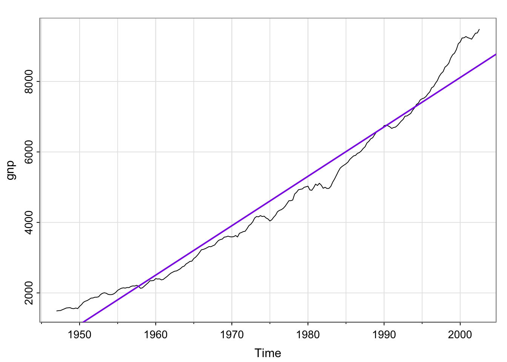
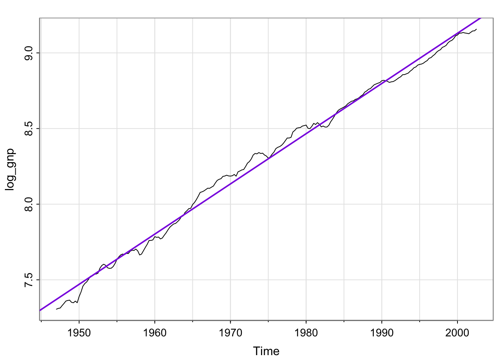
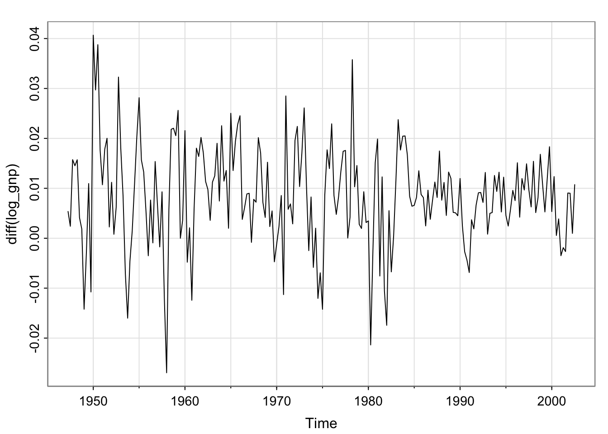
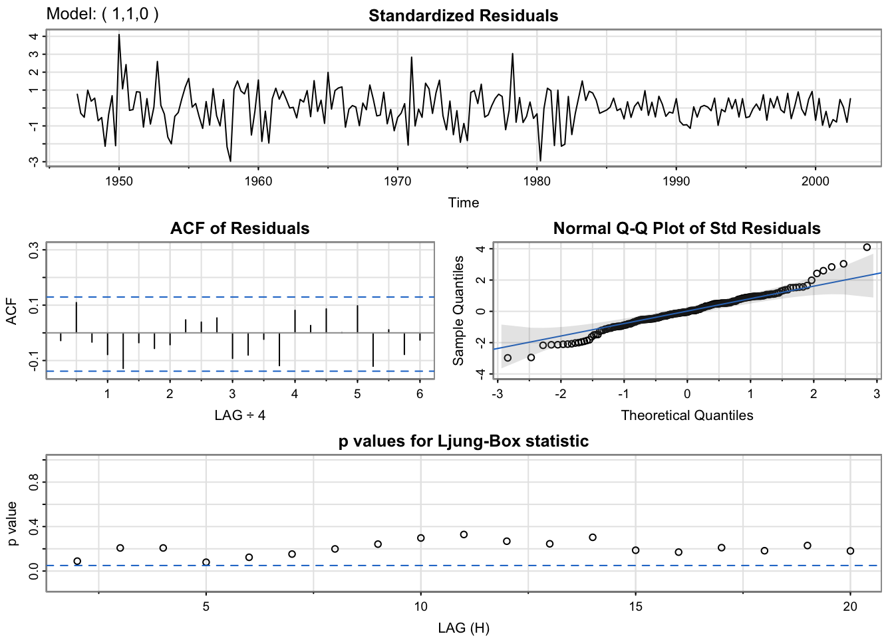
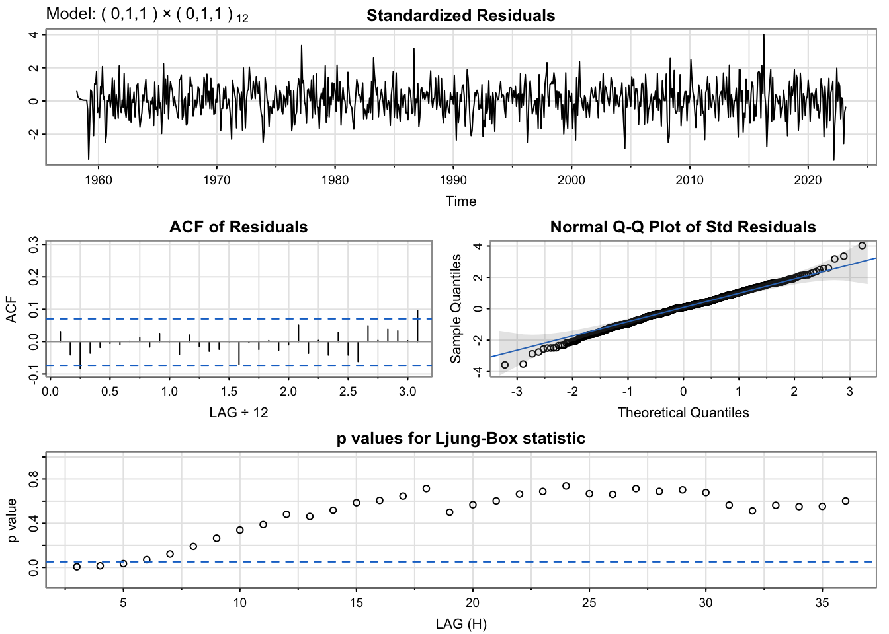
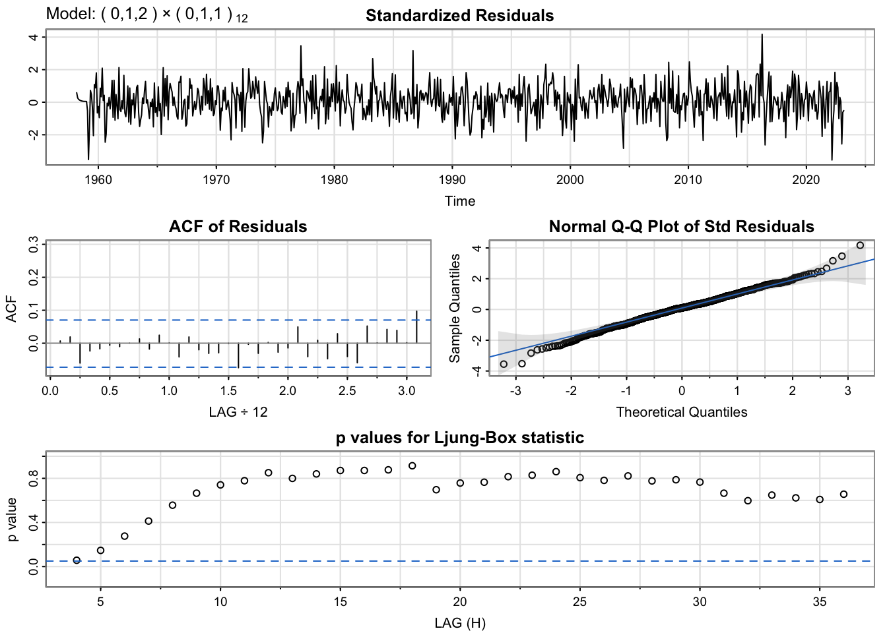

tsplot(gnp)abline(lm(gnp~time(gnp)), col ="blueviolet", lwd =2)

Try taking the log?
Much better! But, still not stationary.
Code
log_gnp <-log(gnp)tsplot(log_gnp)abline(lm(log_gnp~time(log_gnp)), col ="blueviolet", lwd =2)

Try differencing?
Is this stationary? No? Yes? Maybe there’s a bit of a trend?
Code
tsplot(diff(log_gnp))

Unit root tests
Augmented Dickey-Fuller (ADF)
Null hypothesis: random walk (nonstationary)
Alternative hypothesis: stationary data
Kwiatkowski-Phillips-Schmidt-Shin (KPSS)
Null hypothesis: stationary data
Alternative hypothesis: nonstationary data
What’s a unit?
1 (one)
What’s a root of a polynomial?
Example:Find the roots of \(1 - Ax + Bx^2 = 0\)
Use the quadratic formula:
\[
x = \frac{A \pm \sqrt{A^2 - 4B }}{2B}
\] A unit root would be where \(x = 1\) is a solution.
What do we care about being one?
For an AR(1),
\[
x_t = \phi x_{t-1} + w_t
\]
If \(\phi = 1\), we have a random walk (nonstationary). We’d like a hypothesis test that is able to use information about plausible values of \(\phi\) so that we can see if 1 is plausible.
Wait, where’s the polynomial? (Advanced topic)
It’s the AR polynomial– the polynomial with respect to the lag operator. If the AR polynomial has a unit root, the data are nonstationary.
But since it corresponds to having \(\phi = 1\), we can derive the distribution of our estimate of \(\phi\), \(\widehat{\phi}\), and use reasonable distributional assumptions so that we can calculate a p-value. If the roots are less than or equal to 1, that’s nonstationary.
Are they using the ARIMA function? Is the function they are using different?
Explain how the code under “DON’T BELIEVE IT?? OK… HERE YOU GO” provides evidence that automatic arima functions don’t work
Using the sarima function for diagnostics
Code
sarima(log_gnp, p =1, d =1, q =0)
initial value -4.589567
iter 2 value -4.654150
iter 3 value -4.654150
iter 4 value -4.654151
iter 4 value -4.654151
iter 4 value -4.654151
final value -4.654151
converged
initial value -4.655919
iter 2 value -4.655921
iter 3 value -4.655921
iter 4 value -4.655922
iter 5 value -4.655922
iter 5 value -4.655922
iter 5 value -4.655922
final value -4.655922
converged
<><><><><><><><><><><><><><>
Coefficients:
Estimate SE t.value p.value
ar1 0.3467 0.0627 5.5255 0
constant 0.0083 0.0010 8.5398 0
sigma^2 estimated as 9.029576e-05 on 220 degrees of freedom
AIC = -6.446939 AICc = -6.446692 BIC = -6.400957

Activity 3: p-values for Ljung-Box statistic
When an R function for fitting a model gives you a diagnostic plot by default, it’s good to understand that plot– it’s probably useful!
Use whatever resources you can to figure out what that bottom plot means
Testing if the residuals are white noise
Portmanteau tests (French for suitcase or coat rack carrying several items of clothing) (do the residuals “carry information”
Null hypothesis: Residuals are generated by a white noise process.
Alternative hypothesis: Residuals are not generated by a white noise process.
Lots of options for tests, we will use Ljung-Box (default output)
Ljung-box in fable
Code
residuals(ar1_fit_fable) |>features(.resid,ljung_box, lag =10)
sarima(cardox, p =0, d =1, q =1, P =0, D =1, Q =1, S =12)
initial value -0.826338
iter 2 value -1.059073
iter 3 value -1.093845
iter 4 value -1.116555
iter 5 value -1.124382
iter 6 value -1.126345
iter 7 value -1.127354
iter 8 value -1.127953
iter 9 value -1.127984
iter 10 value -1.127985
iter 10 value -1.127985
iter 10 value -1.127985
final value -1.127985
converged
initial value -1.144615
iter 2 value -1.148048
iter 3 value -1.148645
iter 4 value -1.149895
iter 5 value -1.150013
iter 6 value -1.150021
iter 7 value -1.150021
iter 7 value -1.150021
iter 7 value -1.150021
final value -1.150021
converged
<><><><><><><><><><><><><><>
Coefficients:
Estimate SE t.value p.value
ma1 -0.3869 0.0377 -10.2624 0
sma1 -0.8655 0.0183 -47.2846 0
sigma^2 estimated as 0.0980908 on 766 degrees of freedom
AIC = 0.5456475 AICc = 0.545668 BIC = 0.5637873

Results
may still have some residual autocorrelation (Ljung-box test for small lags)
Try adding another term? maybe increase order of MA or add AR component?
Increase order of MA
Code
sarima(cardox, p =0, d =1, q =2, P =0, D =1, Q =1, S =12)
initial value -0.826338
iter 2 value -1.061232
iter 3 value -1.098226
iter 4 value -1.120391
iter 5 value -1.127720
iter 6 value -1.129516
iter 7 value -1.130690
iter 8 value -1.130938
iter 9 value -1.130955
iter 10 value -1.130959
iter 11 value -1.130959
iter 12 value -1.130959
iter 12 value -1.130959
iter 12 value -1.130959
final value -1.130959
converged
initial value -1.147318
iter 2 value -1.150711
iter 3 value -1.151405
iter 4 value -1.152442
iter 5 value -1.152564
iter 6 value -1.152573
iter 7 value -1.152574
iter 7 value -1.152574
iter 7 value -1.152574
final value -1.152574
converged
<><><><><><><><><><><><><><>
Coefficients:
Estimate SE t.value p.value
ma1 -0.3678 0.0359 -10.2365 0.0000
ma2 -0.0704 0.0354 -1.9911 0.0468
sma1 -0.8651 0.0182 -47.4548 0.0000
sigma^2 estimated as 0.09759346 on 765 degrees of freedom
AIC = 0.5431467 AICc = 0.5431876 BIC = 0.5673331

Code
sarima(cardox, p =1, d =1, q =1, P =0, D =1, Q =1, S =12)
initial value -0.827261
iter 2 value -1.034332
iter 3 value -1.066295
iter 4 value -1.094823
iter 5 value -1.108013
iter 6 value -1.115246
iter 7 value -1.116173
iter 8 value -1.120248
iter 9 value -1.120892
iter 10 value -1.121657
iter 11 value -1.122186
iter 12 value -1.124590
iter 13 value -1.125269
iter 14 value -1.125654
iter 15 value -1.125685
iter 16 value -1.125685
iter 17 value -1.125687
iter 18 value -1.125689
iter 19 value -1.125689
iter 20 value -1.125689
iter 20 value -1.125689
iter 20 value -1.125689
final value -1.125689
converged
initial value -1.146682
iter 2 value -1.150731
iter 3 value -1.152123
iter 4 value -1.152815
iter 5 value -1.153157
iter 6 value -1.153220
iter 7 value -1.153266
iter 8 value -1.153337
iter 9 value -1.153352
iter 10 value -1.153359
iter 11 value -1.153384
iter 12 value -1.153388
iter 13 value -1.153390
iter 14 value -1.153390
iter 14 value -1.153390
iter 14 value -1.153390
final value -1.153390
converged
<><><><><><><><><><><><><><>
Coefficients:
Estimate SE t.value p.value
ar1 0.2203 0.0894 2.4660 0.0139
ma1 -0.5797 0.0753 -7.7029 0.0000
sma1 -0.8656 0.0182 -47.5947 0.0000
sigma^2 estimated as 0.09742764 on 765 degrees of freedom
AIC = 0.541514 AICc = 0.5415549 BIC = 0.5657004
Forecasting
Looks like we predict the \(CO_2\) to continue to increase…
Code
sarima.for(cardox, 60, 1,1,1, 0,1,1,12)
$pred
Jan Feb Mar Apr May Jun Jul Aug
2023 422.5365 423.2516 422.6841 420.8017 418.7844
2024 421.8604 422.7144 423.3343 424.7951 425.4936 424.9223 423.0392 421.0216
2025 424.0976 424.9517 425.5715 427.0323 427.7308 427.1595 425.2764 423.2588
2026 426.3348 427.1889 427.8088 429.2695 429.9680 429.3968 427.5136 425.4961
2027 428.5720 429.4261 430.0460 431.5067 432.2052 431.6340 429.7509 427.7333
2028 430.8092 431.6633 432.2832
Sep Oct Nov Dec
2023 417.4195 417.6341 419.1994 420.6362
2024 419.6567 419.8713 421.4367 422.8734
2025 421.8940 422.1085 423.6739 425.1106
2026 424.1312 424.3458 425.9111 427.3479
2027 426.3684 426.5830 428.1483 429.5851
2028
$se
Jan Feb Mar Apr May Jun Jul
2023 0.3121340 0.3706892 0.4100237 0.4437896
2024 0.6057658 0.6286983 0.6508233 0.6839230 0.7112115 0.7366194 0.7609956
2025 0.8931404 0.9133056 0.9330350 0.9616380 0.9859772 1.0090191 1.0313946
2026 1.1563743 1.1759118 1.1951299 1.2221148 1.2455209 1.2678703 1.2896982
2027 1.4134077 1.4329864 1.4523012 1.4786701 1.5018653 1.5241385 1.5459682
2028 1.6707850 1.6906907 1.7103647
Aug Sep Oct Nov Dec
2023 0.4747345 0.5036938 0.5310578 0.5570754 0.5819301
2024 0.7845756 0.8074590 0.8297096 0.8513785 0.8725094
2025 1.0532622 1.0746779 1.0956735 1.1162740 1.1365011
2026 1.3111337 1.3322181 1.3529726 1.3734132 1.3935539
2027 1.5674673 1.5886697 1.6095915 1.6302447 1.6506393
2028